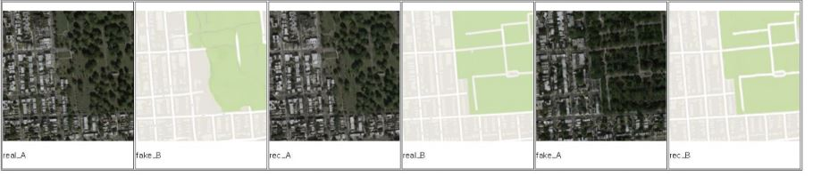

Computer Projects
VR controller for Musical Instruments

Hand position and finger pose were measured using a Flex sensor and IMU. Users can play in a Virtual Environment without an actual instrument.
Users can play musical instruments such as piano and guitar.
The controller consists of 5 flex sensors for sensing finger pose. Using 9-axis IMU for sensing hand rotation,
and a microcontroller (MBN52832) for processing sensor data. We used mux to collect data from the five flex sensors, and the IMU data is transmitted through the I2C protocol.
Low cost VR controller


Make VR controllers in an inexpensive and accessible way using cardboard boxes. It can be used for shooting games, racing games, and simulation games. It is a non-electricity controller.
Virtual Reality Library
We developed a system that a mobile VR app and links it with an offline library. Non-contact library technology allows people to look around offline libraries and rent books.
I implemented a virtual reality library based on the information of books held in offline libraries.
3D Room-scale Reconstruction
Reconstruct indoor scene3D Scan in Room-scale(BundleFusion)
3D Object Detection (3D-BoNet)
3D Primitive Fitting (SPFN, Supervised Primitive Fitting Network)

Mirror Room scene by Ray Tracing
Optimized scene using Data Structure(Octree).As a result, Improves scene speed by 8x with octree.
GPU based Particle System
Implementation of the Physical Environment of the Particle System based on the Sample Code provided by CUDAParticle Number : 10000
Sky Box Implementation AND Cloud picture Texture Mapping
Tornado Path Following Implementation - Each particle gives a force that follows a circular orbit and a force that rises
Final Report Download
GAN Experience
Using GAN. Image Generation and Generate voice and images with Cycle GANDown below, we use satellite maps and Google Maps.
This is the picture that created the Fake Map and the Fake Picture through Cycle GAN Architecture.

Final Report download Link
Miniroom Augmented Reality